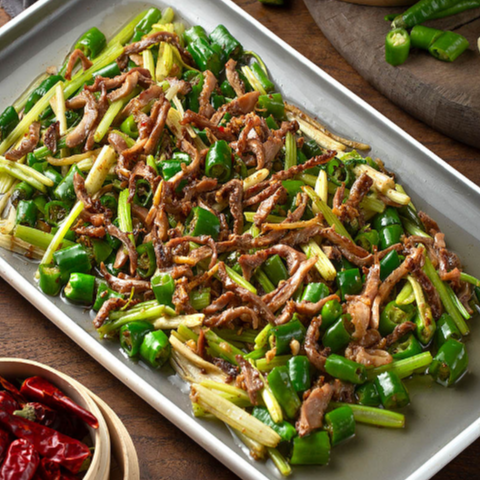
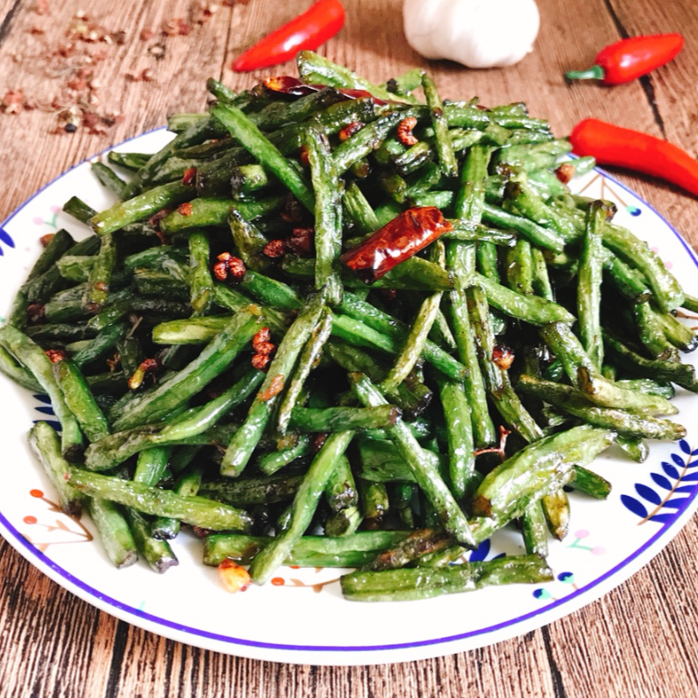
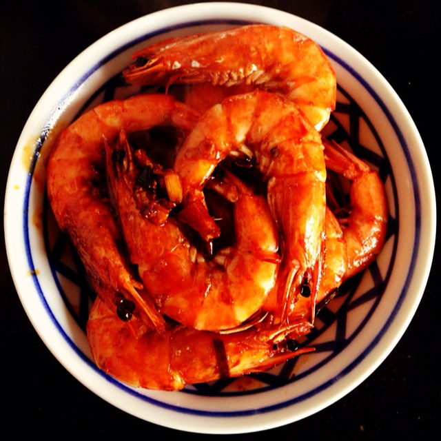
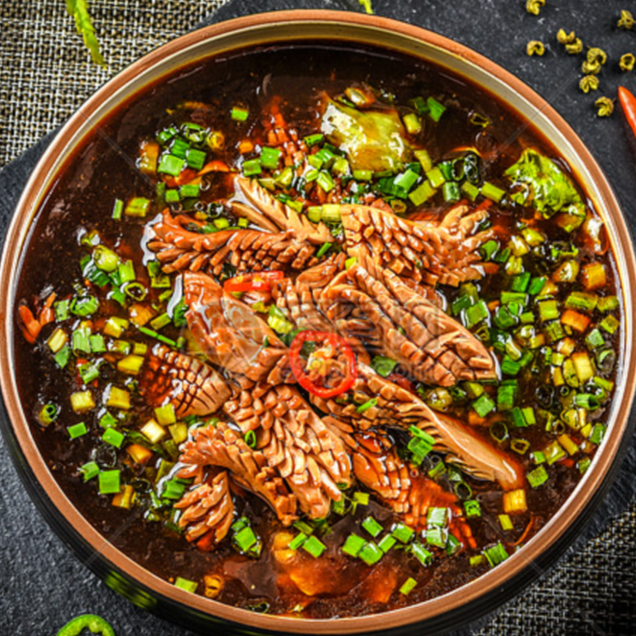
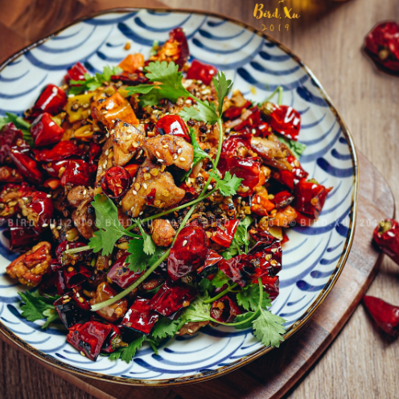
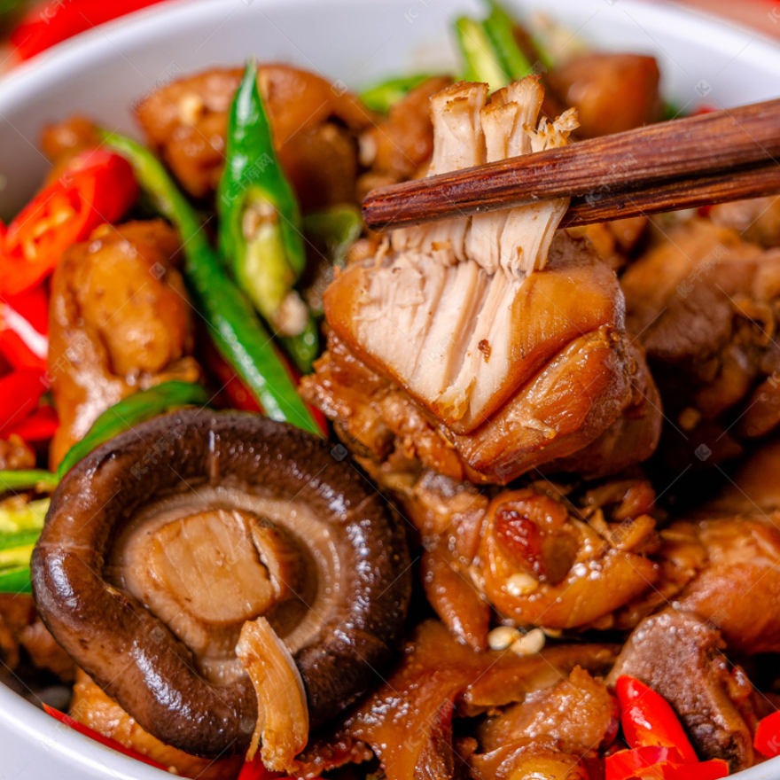
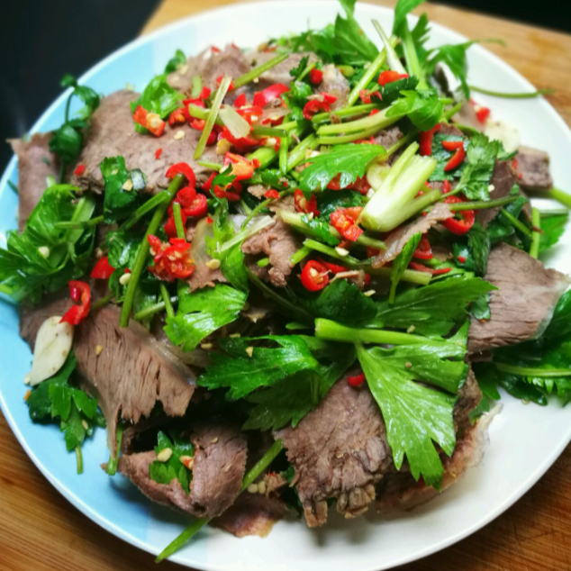
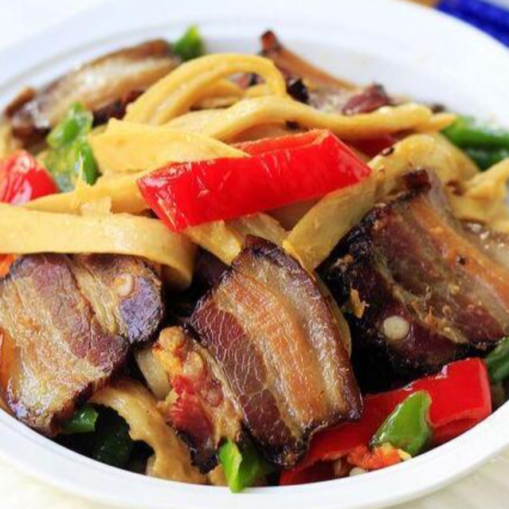
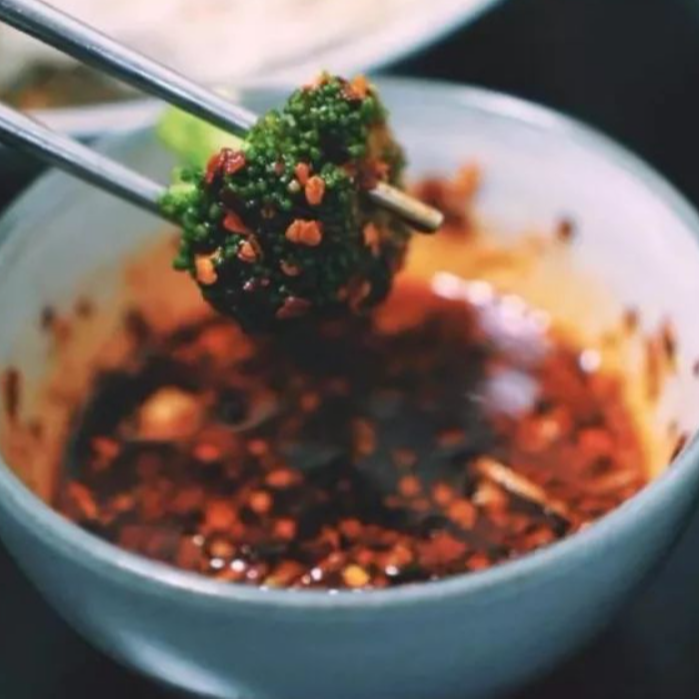

川菜流行之下非遗技艺的传承与保护。
川菜烹饪技艺
2021年6月“川菜烹饪技艺”入选第五批国家级非物质文化遗产代表性项目名录，被形容为史上“最香”的国家级非遗项目。
国家级非物质文化遗产代表性项目名录特色
- 选料广泛、严格，廉俭惜物
人们按照食物特性分档取料;注重时令和地域特色，善用边角余料。(话说，有的好吃嘴吃火锅就爱毛肚、黄喉。)
- 刀工精细、多变
按照烹调和成菜要求，选用不同刀法进行切割。
- 保藏巧妙
合理运用酱腌风腊方法保藏原料、增加风味，常说“没有腊肉香肠，就没有年味”。
- 调味尚滋味、好辛香
川菜讲究清鲜醇浓并重、巧用麻辣，常见复合味型有27种。
- 烹饪多元、注重火候
常见烹饪法有50多种，擅长小炒、干煸、粉蒸、泡制等，尤其讲究急火短炒、火中取宝。
烹调手法工艺
川菜作为典型的中国菜品，烹调工艺有炒、爆、熘、炸、煎、烧等等数十种常规技法，却也隐藏了一些独门绝技，这些手法名称上可能与其它菜系有相同之处，但是如果不细细研究，成菜达不到应有的特殊风味。
- 小炒
小炒的速度快、时间短，因川菜中用到的调味料种类多，如一一加入的话，容易造成糊锅，所以调制味汁要提前准备好。要注意的是，味汁要一次到位，如果调制的比例掌握不好，因菜品炒制火急、成菜快，就是重新调整比例也不能使菜品味道变好。例如鱼香肉丝，不过油，不换锅，味汁现兑现滋，急火快炒，成品鱼香味突出。
- 干煸
干煸的烹饪手法，是川菜中常见的，首先要将食材码味，但是是码味时一定不要上浆，避免糊锅粘稠。干煸成菜的口味特点是入口干香醇厚，食材需要煸炒耗时数分钟到十几分钟，导致烹制的时间过长，对酒店来说影响上菜速度，所以现在酒店都是先油炸，后干煸，造成了干香味略淡，油份偏多。
- 干烧
这个烹饪手法，可以说是川菜中的一大特色，简单来讲就是把汤汁烧干。但是在具体的烹饪过程中，有很多窍门，比如食材原料先炸制，再用小火慢慢烧，烧到菜品油亮。干烧成菜要求色泽红亮，入口干香，绝对不能用水淀粉收汁。干烧菜品，有炸和烧搭配的独特口味，在一些川菜烹饪比赛中，经常取得不俗的成绩。菜品有：干烧岩鲤、干烧大虾。
- 干锅
最近几年，干锅菜品风靡全国，甚至出现了很多以干锅为主的加盟连锁酒店、餐馆。干锅菜品的最大特点是菜品干香、口味厚重、回味持久，主料吃完之后，可以加汤当做火锅，一菜多吃并且经济实惠。
干锅店都有自己独特的口味，最主要就是每家店炒制的干锅底料不同，就像火锅底料一样，各有各的特色，各有各的风味。干锅底料的炒制秘方，被视为干锅店的命根子。- 炸收
四川物产丰富，食材众多，在早期没有冰箱等保鲜方法，为延长食材储存时间并满足四川吃的要香的传统习惯，炸收的烹调手法应运而生，成菜颇多。炸收，就是将食材在油锅中炸干水气，干香酥脆，再上过烹饪，调入味汁，小火收汁出菜，炸收成菜干香、酥脆爽口、口味层次分明、方便存放，对餐馆酒店来说，能够保证快速上菜。例如怪味秃顶、香辣脆鳝、酱酥鲫鱼、辣子鸡等。
- 闷烧
烹饪的手法类似于烧，主要的区别就是闷烧的时候是盖盖子烧。闷烧的手法，要求汤汁浓稠、上色油亮入味，和干烧比起来，闷烧口感以绵软为主。闷烧在川菜中包括红焖、油焖、黄焖三种，主要区别在于调味后形成的色泽不同。菜品有：黄焖鸡、麻香闷牛掌、油焖大虾、啤酒闷兔丁等。
- 干拌
这种烹饪手法在四川常见，主要就是将卤制好的成菜切片加入干辣椒粉、花椒粉、花生碎和熟芝麻等辛辣调味料拌匀，不加或者加入少量的红油、香油或熟菜籽油。特点是入口干香麻辣，是四川下酒的好佐料，常见于四川的地摊：冷淡杯、夜啤酒；也常见于酒店餐馆的开胃菜。
- 烟熏
这种烹饪技法，算是川味一绝，比如四川腊肉、川味香肠、缠丝兔等菜品，闻名全国，在四川农村，主要是将食材熏干水气，利用厨房柴火天天熏、月月熏，这样可以保证食材存放并且增加特殊风味，经常是经过半年以上的时间，才拿出食用。成菜口味厚重、回味悠长，是四川人在情感上不可取代的一款美食。现在的做法基本是川盐腌制食材后，放入基本密闭空间，用柏树枝、锯末、花生壳等熏制而成。
- 蘸水
蘸水在川菜中有不可或缺的地位，食用方法就是将调味料拌匀盛入碟子或小碗中，将食材放入调味料中浸泡、挂浆上味再吃，在四川，蘸水往往被视为菜品的一部分，所以经常是一菜一碟，很少公用，目的就是让菜品的口味完美。而现在经常有百搭口味的蘸水，这类蘸水往往是以个性不明显的咸鲜和麻辣为主。
- 其他
除了以上烹调工艺，川菜中还有一种特殊的以刀工为主的技艺。比如棒棒鸡、灯影牛肉、金丝面等。这种技艺虽不算是独门的手艺，搭配上川味特殊的调味手法，却也称得上看家本领。